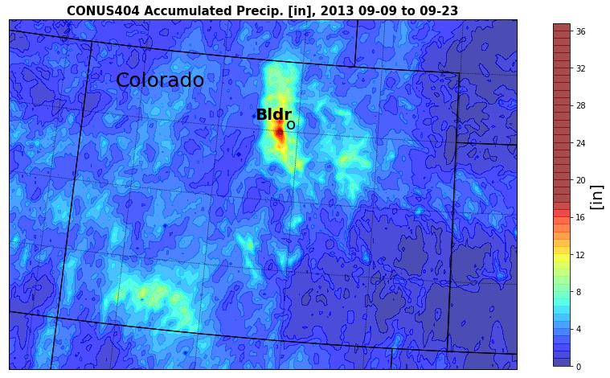

Create and assess an extreme precipitation event index using NCAR’s CONUS 404 Convective Permitting (CP) Global Circulation Model (GCM) grids with 4-km horizontal resolution compared to the PRISM monthly climatology precipitation dataset, and rain gauge data
Contents
Create and assess an extreme precipitation event index using NCAR’s CONUS 404 Convective Permitting (CP) Global Circulation Model (GCM) grids with 4-km horizontal resolution compared to the PRISM monthly climatology precipitation dataset, and rain gauge data#
- Created September 2022 by Serke, D. for the NCAR GIS Group#
Purpose#
In this notebook, we will explore how to create a single sample index that are derived from more complex model fields.#
For this workflow, we have chosen to demonstrate a ‘precipitation extreme’ index, using monthly temporal resolution.#
The index values will then be compared to ‘truth’ data in the form of rain gauge time series values and long term climate normal values from PRISM.#
A user may choose to implement any manner of index or indicator, following the template in this workflow#
A list of other potential indices/indicators appears in these links: WMO Climpact indices, IDMP drought indices#
Another purpose is to gain a better understanding of the background, output fields, precision, and utility of NCAR’s CONUS404 model as it is described in this paper#
Background#
A review of Convective-permitting climate modelling was the topic of this Prein et al. 2015 paper#
Previous research by Prein et al. 2022 and Prein et al. 2020 has demonstrated that with high resolution, convection-permitting GCMs it is possible to identify longer duration precipitation events (eg monsoon, MCSs) via the frequency of days with synoptic-scale moisture advection into the region. Using this field greatly improves predictability over directly utilizing modeled precipitation. We will explore that possibility here.#
Characteristics of NCAR’s CONUS404 model, as discussed in Liu et al. 2017 include:#
- runs on high performance computing system sponsored by the USGS#
- uses Weather Research and Forecasting (WRF) model Version 3.9.1 with 4 x 4 km horizontal resolution over CONtinental US (CONUS) + portion of Canada#
- hourly temporal output frequency#
- resolves orography#
- 40-year retrospective simulation (Oct of 1979-2021)#
- permits convection#
- initial boundary conditions from ERA5 1-hr reanalysis data#
- 51 stretched vertical levels, with 50 mb as top level#
- uses Thompson and Eidhammer (2014) aerosol-aware microphysics package#
- uses Rapid Radiative Transfer Model#
- uses Yonsei University planetary boundary layer#
- uses the Noah-MP land-surface model, with several key custom modifications#
- uses the Miguel Macho Fan (MFF) groundwater scheme#
- spectral nudging is applied (to remove warm season bias)#
- an upgraded lake water temperature treatment is implemented#
#
Potential advantages of high resolution CP models run multiple decades include:#
- resolving high intensity precipitation events, which are not possible in convection-parameterizing models#
- better resolve evapotranspiration (ET), the most uncertain water cycle term#
- the sum of these two is better resolved runoff#
- extremes are typically associated with mesoscale processes, such as mesoscale terrain forcing, gust fronts, dry lines, and MCSs, which are typically not properly depicted in GCMs#
#
Findings from the CONUS404 compared to ‘truth’:#
- Quite consistent year to year, having no visible deterioration and drifting with integration time#
- the model absolute error is well within the observational uncertainty#
- apparent deficiency is the mid-summer rainfall low bias over the central U.S., possibly indicative of too-weak (or too infrequent) propagating convection which originates from the Rockies#
- The pattern correlation coeffcient is higher than 0.96 for all seasons.#
- WRF does particularly well in simulating the coastal and topographic modifcations over the western CONUS in all seasons#
- confrms the model’s capability in reproducing orographic precipitation#
- The average precipitation at all sites has a small negative bias of just −2 %#
- Able to replicate the observed annual cycle, accurately timing the maximum/minimum monthly precipitation, and the departure is typically a few percent of the observations#
#
For this exploratory workflow, we chose to demonstrate the Standardized Precipitation Index (SPI), developed by McKee et al. (1993)#
Workflow outline#
First, we will divide this complicated sounding process down into prioritized, manageable steps in this workflow outline…#
1. Define a study period#
2. Collect input data#
a. climatology - PRISM 4km x 4km horizontal resolution normals and time-series gridded datasets
b. test - CONUS 404 GCM, convection permitting, 4km x 4km horizontal resolution gridded dataset
c. truth - rain gauge/radar-derived Quantitative Precipitation Estimates (QPE) data
3. Set up user’s python environment#
4. Ingest input data#
5. Implement an extreme precipitation index#
6. Visualize data#
a. fields from climatology
b. raw field from model
c. index field from model and climatology
Step 1. Define a study period#
First, we need to identify a time period where all of our input datasets will be known to be available and an extreme precipitation event is known to have occurred#
The climatology data covers at least the last 30 years, with monthly 4km x 4km solution (similar to the CONUS404 model grid)#
Let’s examine the Colorado Front Range flooding from 2013 to demonstrate the workflow#
A more detailed meteorological analysis of the event was presented by the National Weather Service (NWS) at this link#

Next, we’ll collect some data …#
Step 2. Collect input datasets#
Next, we will collect the input datasets for the climatology/gauge dataset (2a, PRISM), and the GCM gridded dataset (2b, CONUS 404):#
#
2a climatology dataset -#
- The PRISM 30-year precipitation (ppt) normals dataset can be downloaded from this link#
- and the PRISM 30-year ppt time-series dataset can be downloaded from this link#
- For this workflow, the extracted contents of the .zip file were pointed to a subdirectory created under this path: /d1/serke/projects/CLIMATE_GIS/data/#
#
2b GCM gridded dataset -
- The NCAR 440 model sample file can be accessed here:#
- Files will be publicly available within a few months via NCAR’s RDA#
#
Step 3. Set up user’s python environment (for a linux machine)#
Install conda or miniconda on your machine, at least v3.x#
Direct your browser to NCAR’s Jupyterhub#
Change directory (cd) into your python working directory:#
Activate your preferred python environment (example below):#
Install the following python packages, using the example command line below:#
Import installed packages into python environment#
from wrf import (to_np, getvar, smooth2d, get_cartopy, cartopy_xlim, cartopy_ylim, latlon_coords, geo_bounds)
from netCDF4 import Dataset
import xarray as xr
import cartopy.crs as crs
from cartopy.feature import NaturalEarthFeature
import cartopy.feature as cfeature
import os
os.environ["PROJ_LIB"] = os.path.join(os.environ["CONDA_PREFIX"], "share", "proj")
from __future__ import print_function
import rasterio # to ingest raster format data, which are the .bil climatology file format
from rasterio.plot import show # show mapview
from rasterio.plot import show_hist # show histogram
from shapely.geometry import box #
# Display output of plots directly in Notebook
%matplotlib inline
import matplotlib.pyplot as plt # for plotting
from matplotlib.cm import get_cmap
from matplotlib.colors import ListedColormap
import numpy as np # for array functionality
import pandas as pd # for dataframes
import geopandas as gpd #
from scipy.stats import gamma #
#import pyPRISMClimate # for PRISM dataset ingest
#from pyPRISMClimate import get_prism_monthlys, get_prism_monthly_single, get_prism_dailys, get_prism_daily_single,get_prism_normals
#from pyPRISMClimate.utils import prism_iterator #
import statistics # for stats functionality
import warnings #
warnings.filterwarnings("ignore") # silence warnings
Step 4. Ingest input datasets#
4a. PRISM Monthly Precipitation Climatology gridded dataset:#
prism_dir = '/d1/serke/projects/CLIMATE_GIS/data/'
prism_normals_dir = 'PRISM_ppt_30yr_normal_4kmM3_09_bil/'
prism_timeseries_dir = 'PRISM_ppt_30yr_timeseries_4kmM3_BLDR_csv/'
prism_timeseries_name = 'PRISM_ppt_stable_4km_199101_202012_40.0335_-105.2520.csv'
ppt_30yr_boulderCO_timeseries = pd.read_csv(prism_dir + prism_timeseries_dir + prism_timeseries_name, header=10)
#ppt_30yr_boulderCO_timeseries
# array of september month indices starts with the 8th and includes every 12th index until the last index (number 359)
ind_sept = np.arange(8, 359, 12)
# subset the original dataframe using iloc index method
ppt_30yr_sept_boulderCO_timeseries = ppt_30yr_boulderCO_timeseries.iloc[ind_sept]
ppt_30yr_sept_boulderCO_timeseries
prism_iterator(prism_dir + prism_normals_dir, recursive = False)
Define the directory path that the ppt normals (.bil format) subdirectories and ppt point time-series files (.csv format) were stored in by the user in Step 2a:#
Load the 30-year ppt time-series from near Boulder, CO from the .csv file (skipping the header lines) into a pandas dataframe:#
Now subset the dataframe to include only ppt values from all 30 septembers#
Now, lets work with the .bil ppt normals dataset. Execute the ‘prism_iterator’ function that outputs information on the available .bil files in that path#
NOTE: The only variable is ‘ppt’, or daily precipitation amount in mm, since that was the only field requested from the PRISM data download interface#
ppt_sept_normal = rasterio.open(prism_dir + prism_normals_dir + '/PRISM_ppt_30yr_normal_4kmM3_09_bil.bil')
ppt_sept_normal.meta
type(ppt_sept_normal)
ppt_sept_normal.crs
ppt_sept_normal.read().shape
ppt_sept_normal.count
Lets now load the 30-year normals file for September (month ‘09’ in the .bil filename) using the ‘full_path’ field above:#
Display some raster properties (metadata, type, crs, shape, and layer count):#
4b. NCAR CONUS440 gridded dataset (borrowed from https://wrf-python.readthedocs.io/en/latest/basic_usage.html):#
Access the CONUS404 data files in two possible ways:#
1. via NCAR’s casper supercomputer on glade, or#
2. via manual access files on local storage#
Both are demonstrated below …#
# 1. Access CONUS404 data files via NCAR's casper on glade
# * This method was outlined here: https://ldcpy.readthedocs.io/en/v0.15.4/notebooks/LargeDataGladeNotebook.html
# * requires the ldcpy module
# * requires access to the NCAR machine and a project charge account
# --- Import Modules --- #
import os
import glob
import time
import sys
## Add ldcpy root to system path (MODIFY FOR YOUR LDCPY CODE LOCATION)
#sys.path.insert(0, '/glade/u/home/serke/newldcpy/ldcpy')
#import ldcpy
import numpy as np
import xarray as xr
import pandas as pd
import geopandas as gpd
import numcodecs
import dask
from dask.distributed import Client, progress, LocalCluster
#from dask.distributed import performance_report
from dask.diagnostics import ProgressBar
#import ncar_jobqueue
#from ncar_jobqueue import NCARCluster
from dask_jobqueue import PBSCluster
import holoviews as hv
import hvplot
import glob
import zarr
# --- End Import Modules --- #
tic = time.time()
print('Process initiated at {0}'.format(time.ctime()))
## if you want to use the DASK daskboard, then modify the code below and run it
## dask.config.set(
## {'distributed.dashboard.link': 'https://jupyterhub.hpc.ucar.edu/ch/user/abaker/proxy/{port}/status'}
## )
Process initiated at Wed Sep 28 22:19:54 2022
# Connect to DASK distributed cluster:
# * The cluster object is for a single compute node
cluster = PBSCluster(
cores = 2,
queue = 'casper',
project = 'NSAP0003',
memory = '25GB',
walltime = '02:00:00',
death_timeout = 75,
resource_spec = 'select=1:ncpus=2:mem=25GB')
# scale as needed
n_jobs = 4
n_jobs_start = n_jobs
#cluster.scale(jobs=n_jobs)
cluster.adapt(minimum_jobs=1, maximum_jobs=30)
cluster
# The scheduler creates a normal-looking job script that it can submit multiple times to the queue:
# Look at the job script (optional)
print(cluster.job_script())
# Connect client to the remote dask workers
client = Client(cluster)
client
# Define data file paths
CONUS404_casper_event_dir = '/glade/work/serke/GIS/data/CONUS404/'
CONUS404_casper_event_yyyy = 'WY2013/'
#CONUS404_casper_event_yyyy = 'test/'
# define data file name
CONUS404_constant_data_name = 'constant/wrfconstants_d01_1979-10-01_00:00:00.nc4'
# list directory contents
CONUS404_alltestfiles = sorted(glob.glob(r'/glade/work/serke/GIS/data/CONUS404/WY2013/*'))
# print info on available files
print('Number of files to process = ', len(CONUS404_alltestfiles))
# open first data file with xarray module
geogrid0 = xr.open_dataset("".join(CONUS404_alltestfiles[0]))
# extract the ACumulatedRAIN (ACRAINLSM) field, will aggregate all other times' data to this variable
# also, squeeze out the singleton 3rd dimension so shape matches XLAT and XLONG
ACRAINLSM = geogrid0.ACRAINLSM.squeeze()
# Loop over each hourly file in CONUS404_alltestfiles list
for index, fname in enumerate(CONUS404_alltestfiles):
#print(index)
# Extract the 'ACRAINLSM' variable for hourly file number 'index'
geogrid = xr.open_dataset("".join(CONUS404_alltestfiles[index]))
# sum previous (ACRAINLSM) and current (geogrid[index]) xarrays of accumulated precip
ACRAINLSM = ACRAINLSM + geogrid.ACRAINLSM.squeeze()
# load constant field nc file
CONUS404_constant_nc = Dataset(CONUS404_casper_event_dir + CONUS404_constant_data_name)
# Get the lat/lon coordinates from constant file
XLAT = getvar(CONUS404_constant_nc, "XLAT")
XLONG = getvar(CONUS404_constant_nc, "XLONG")
XTIME = getvar(CONUS404_constant_nc, "XTIME")
# check that variable shapes are consistent
print(' ACRAINLSM shape = ', ACRAINLSM.shape)
print(' XLAT shape = ', XLAT.shape)
print(' XLONG shape = ', XLONG.shape)
Number of files = 216
ACRAINLSM shape = (1015, 1367)
XLAT shape = (1015, 1367)
XLONG shape = (1015, 1367)
# Close the dask cluster and client
cluster.close()
client.close()
# 2. Access CONUS404 data files via local storage
# define data file path
CONUS404_data_path = '/d1/serke/projects/CLIMATE_GIS/data/CONUS404/'
# define data file names
CONUS404_constant_data_name = 'wrfconstants_d01_1979-10-01_00:00:00.nc4'
CONUS404_2d_data_name1 = 'wrf2d_d01_2013-09-12_06:00:00'
CONUS404_2d_data_name2 = 'wrf2d_d01_2013-09-12_12:00:00'
# load constant field nc file
CONUS404_constant_nc = Dataset(CONUS404_data_path + CONUS404_constant_data_name)
# load 2d field nc file
CONUS404_2d_nc1 = Dataset(CONUS404_data_path + CONUS404_2d_data_name1)
CONUS404_2d_nc2 = Dataset(CONUS404_data_path + CONUS404_2d_data_name2)
# Get the lat/lon coordinates from constant file
XLAT = getvar(CONUS404_constant_nc, "XLAT")
XLONG = getvar(CONUS404_constant_nc, "XLONG")
XTIME = getvar(CONUS404_constant_nc, "XTIME")
# Get desired 2d model fields (fix to handle input from separate files from: https://groups.google.com/a/ucar.edu/g/wrfpython-talk/c/5-mwY1_EC94?pli=1)
#ACRAINLSM = getvar(CONUS404_2d_nc, "ACRAINLSM", meta=False)
geogrid1 = xr.open_dataset(CONUS404_data_path + CONUS404_2d_data_name1)
geogrid2 = xr.open_dataset(CONUS404_data_path + CONUS404_2d_data_name2)
# display field characteristics
#print('XLAT shape = ', XLAT.shape)
#print('XLONG shape = ', XLONG.shape)
#print('ACRAINLSM shape = ', geogrid1.ACRAINLSM.shape)
# THIS IS SAMPLE CODE JUST KEEPING IT AROUND FOR NOW
## Get the latitude and longitude coordinate. This is usually needed for plotting.
#lats, lons = latlon_coords(ACRAINLSM)
## Get the geobounds for the variable
#bounds = geo_bounds(ACRAINLSM)
#print (bounds)
## Get the geographic boundaries for a subset of the domain
#ACRAINLSM_subset = ACRAINLSM[150:250, 150:250]
#ACRAINLSM_subset_bounds = geo_bounds(ACRAINLSM_subset)
#print (ACRAINLSM_subset_bounds)
Step 5. Implement an extreme precipitation index#
For this exploratory workflow, we chose to demonstrate the Standardized Precipitation Index (SPI), developed by McKee et al. (1993)#
SPI is simply the difference of precipitation from the mean for a specified time period divided by the standard deviation where the mean and standard deviation are determined from past records.#
This link provides a more detailed description, strengths, and weaknesses of the SPI index#
….. For this example, we are using monthly resolution data over a 30 year period#
ppt_30yr_sept_boulderCO_timeseries_mean = ppt_30yr_sept_boulderCO_timeseries.mean()
ppt_30yr_sept_boulderCO_timeseries_std = ppt_30yr_sept_boulderCO_timeseries.std()
ppt_30yr_sept_boulderCO_timeseries_var = statistics.variance(ppt_30yr_sept_boulderCO_timeseries['ppt (inches)'])
SPI_PRISM_atBldr_forSepts = (np.array(ppt_30yr_sept_boulderCO_timeseries['ppt (inches)']) - np.array(ppt_30yr_sept_boulderCO_timeseries_mean)) / np.array(ppt_30yr_sept_boulderCO_timeseries_std)
SPI_CONUS404_atBldr_forSept2013 = (np.array(9.84) - np.array(1.94)) / np.array(2.71)
print(' SPI for September, 2013 using CONUS404 dataset at Boulder, CO = ', np.round(SPI_CONUS404_atBldr_forSept2013, 0))
SPI for September, 2013 using CONUS404 dataset at Boulder, CO = 3.0
Let’s calculate these statistical measures for use in the SPI:#
Step 6. Visualize data#
Display mapview of ppt normal values across CONUS representing the last 30 years from the gridded PRISM climatology:#
show(ppt_sept_normal,title='PRISM - normal precipitation amount [mm] for September')
Display histogram of ppt normal values across CONUS representing the last 30 years from the gridded PRISM climatology:#
show_hist(ppt_sept_normal, bins=50, lw=0.0, stacked=False, alpha=0.3, histtype='stepfilled', title="PRISM - Precipitation amount [mm] for September")
Display time-series of september monthly ppt field values from 1991-2020 from point data representing Boulder, CO:#
# use plot() method on the dataframe
ppt_30yr_sept_boulderCO_timeseries.plot('Date', 'ppt (inches)', grid=True)

Plot density normalized histogram of september ppt values and fit to a Gamma Distribution:#
# define x-values as from 0 to 16 inches, with 6 increments per inch of ppt (16*6=96 values)
x = np.linspace(0, 16, 96)
# fit a Gamma distribution to 30-yr sept ppt values
shape, loc, scale = gamma.fit(ppt_30yr_sept_boulderCO_timeseries['ppt (inches)'], floc=0)
y = gamma.pdf(x, shape, loc, scale)
# first plot histogram of the observed ppt values (in blue, with 16 bins of 1 in increments)
ppt_30yr_sept_boulderCO_timeseries.hist(bins=16, density=True)
# second plot the Gamma distribution x and y values over top (orange line)
plt.plot(x, y)
plt.title('Fitted Gamma (orange) to 30-yr Sept. ppt field (blue)')
plt.xlabel('ppt [in]')
plt.ylabel('Frequency')
plt.text(14.0, 0.05, '2013', Fontsize=20)
plt.xlim(0.0, 16.0)
plt.grid(True)
plt.show()

Plot a timeline of SPI values September 1991 through September 2020:#
# define custom wet/dry colormap
cMap = ListedColormap(['red', 'orange', 'yellow', 'greenyellow', 'darkgreen'])
# plot SPI timeline
plt.rcParams['figure.figsize'] = (10, 8)
plt.xlabel('Year', Fontsize=20)
ax = plt.gca()
#fig, ax = plt.subplots(1,1)
ax.imshow(np.tile(np.expand_dims(SPI, axis=0), (3,1)), cmap=cMap, vmax=2, vmin=-2, extent=[1991, 2020, 0, 2])
# remove y-axis labels/ticks
ax.axes.yaxis.set_visible(False)
# add custom colorbar
cbar=plt.colorbar(im, orientation='horizontal')
cbar.set_ticks([-2, -1, 0, 1, 2])
#cbar.ax.set_yticklabels(['<-2', '-1', '0', '1', '>2'], Fontsize=20)
cbar.ax.set_xticklabels(['extreme dry', 'dry', 'normal', 'wet', 'extreme wet'], Fontsize=20)
cbar.set_label('S P I', rotation=0, Fontsize=20)
plt.show()

Plot CONUS404 hourly accumulated precipitation#
# Mapping Helper Routines
# In this example, we’re going to extract the cartopy mapping object from a diagnostic variable (XLAT or XLONG), the lat,lon coordinates, and the geographic boundaries.
# Get the cartopy mapping object
cart_proj = get_cartopy(XLAT)
# Create a figure
fig1 = plt.figure(figsize=(16, 8))
# Set the GeoAxes to the projection used by WRF
ax1 = plt.axes(projection=cart_proj)
# Download and add the states and coastlines
states = cfeature.STATES.with_scale('50m')
#states = NaturalEarthFeature(category="cultural", scale="50m",
# facecolor="none",
# name="admin_1_states_provinces_shp")
ax1.add_feature(states, linewidth=1.0, edgecolor="black")
ax1.coastlines('50m', linewidth=0.8)
plt.contourf(to_np(XLONG), to_np(XLAT), to_np(ACRAINLSM)/25.4, 50, transform=crs.PlateCarree(), vmin0=0, vmax=18, cmap=get_cmap("jet"), alpha=0.7)
#plt.contourf(to_np(XLONG), to_np(XLAT), to_np(geogrid1.ACRAINLSM).squeeze(), 100, transform=crs.PlateCarree(), vmin=0, vmax=40, cmap=get_cmap("jet"), alpha=0.6)
# Add a color bar
plt.colorbar(ax=ax1, shrink=0.98, orientation="vertical").set_label(label='[in]', size=20, weight='normal')
# Set the map bounds
ax1.set_xlim([-1050000, -250000])
ax1.set_ylim([ -250000, 300000])
#ax1.set_xlim(cartopy_xlim(XLONG))
#ax1.set_ylim(cartopy_ylim(XLAT))
# Add the gridlines
ax1.gridlines(color="black", linestyle="dotted")
# Add title using input file name components
plt.title('CONUS404 Accumulated Precip. [in], 2013 09-09 to 09-23', fontsize=15, weight='bold')
plt.text(-105.2281, 40.0373, 'o', transform=crs.PlateCarree(), fontsize=20, weight='normal')
plt.text(-105.2281-0.60, 40.0373+0.10, 'Bldr', transform=crs.PlateCarree(), fontsize=20, weight='bold')
plt.text(-108.5000, 40.4000, 'Colorado', transform=crs.PlateCarree(), fontsize=25, weight='normal')
plt.show()

plot = ACRAINLSM.hvplot.quadmesh(
x='XLONG',
y='XLAT',
z=['TT', 'RH'],
groupby=['Time'],
widget_location='bottom',
rasterize=True,
coastline=True,
cmap='inferno',
)
plot
AttributeErrorTraceback (most recent call last)
<ipython-input-22-e251e0fd1420> in <module>()
----> 1 plot = ACRAINLSM.hvplot.quadmesh(
2 x='XLONG',
3 y='XLAT',
4 z=['TT', 'RH'],
5 groupby=['Time'],
/glade/u/home/serke/.conda/envs/analysis2/lib/python2.7/site-packages/xarray/core/common.pyc in __getattr__(self, name)
177 return source[name]
178 raise AttributeError("%r object has no attribute %r" %
--> 179 (type(self).__name__, name))
180
181 def __setattr__(self, name, value):
AttributeError: 'DataArray' object has no attribute 'hvplot'